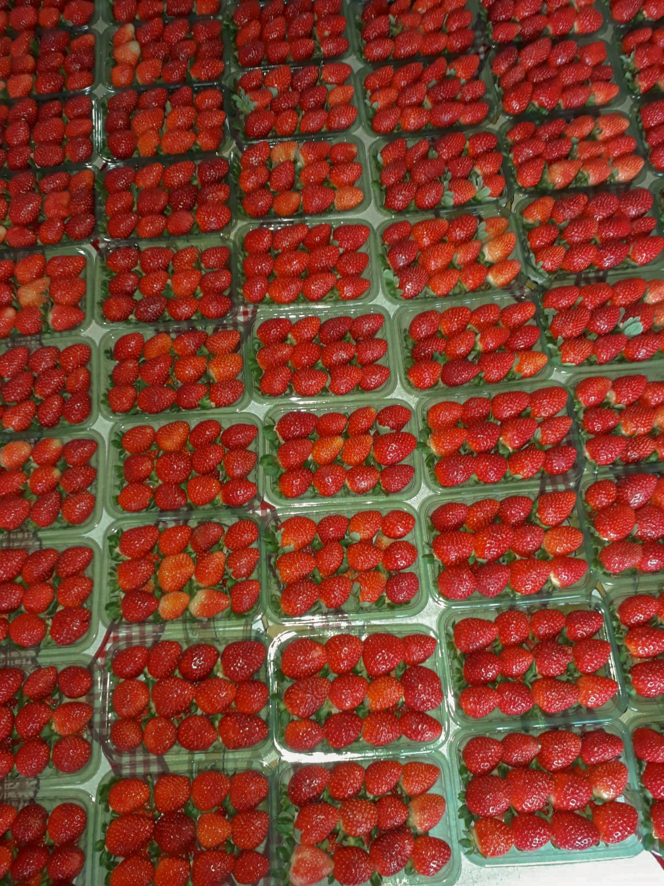

Ingredientes
- 200 g de biscoito maisena triturado (ou bolacha de sua preferência)
- 100 g de manteiga derretida
- 1 lata de leite condensado
- 1 caixinha de creme de leite (200 g)
- 1 colher de sopa de suco de limão (opcional, para dar leve acidez)
- 2 caixas de morangos lavados e fatiados
- Geleia de morango (opcional, para dar brilho)
Modo de Preparo
- Misture o biscoito triturado com a manteiga derretida até formar uma farofa úmida.
- Forre o fundo de uma forma de aro removível (20-22 cm) com essa mistura, pressionando bem para formar a base. Leve à geladeira por 15 minutos.
- Em uma tigela, misture o leite condensado, o creme de leite e o suco de limão até ficar homogêneo.
- Espalhe esse creme sobre a base de biscoito.
- Arrume os morangos fatiados sobre o creme, cobrindo toda a superfície.
- Se quiser, aqueça um pouco da geleia e pincele sobre os morangos para dar brilho.
- Leve à geladeira por pelo menos 2 horas antes de servir.